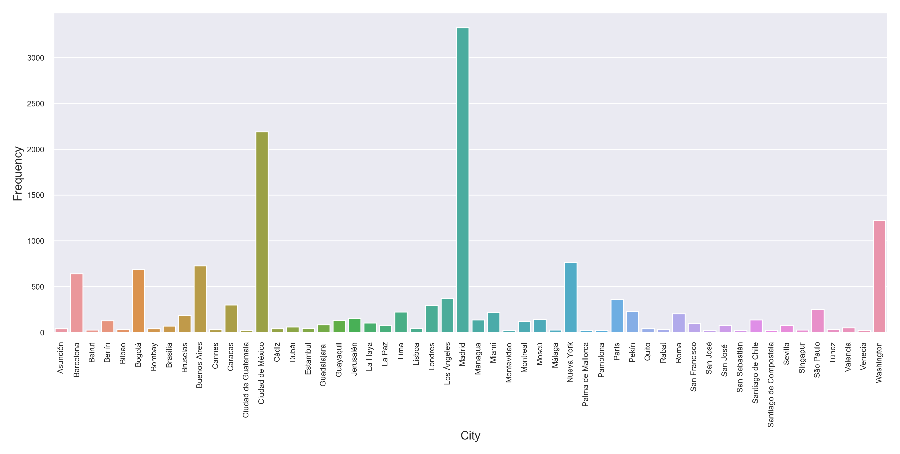

What cities appear more often in El País articles?
1 Introduction
El País is one of the most well-known newspapers in the Hispanic world. Personally, it is one of my favorites as its American (Latin American) version has news from all over the region (I live in Mexico).
I've been an `El País' reader for a few years now, and I can't help but notice that the Latin American version is not that well balanced. Indeed, most of the articles I see on their front page come from Mexico.
In order to get the countries of the main articles, I took all the articles on the front-page from
2018 using python modules requests and beautifulsoup.
2 Results
El País front-page website is written in html and has its articles separated by <article> and
</article> tags. Inside these tags you can find the title of the article with the class
"articulo-titulo" and the location of the article with class "articulo-localizacion" inside a
dev tag.
After getting the text from the article with:
import requests from bs4 import BeautifulSoup r = requests.get('https://elpais.com/elpais/portada_america.html') soup = BeautifulSoup(r,text, 'html') articles = soup.find_all('article', attrs={'class': 'articulo'}) loc = soup.find_all('span', attrs={'class': 'articulo-localizacion'})
Using calendar and doing the proper formatting for months and days, it's easy to parse through a
year of front-page articles. The resulting 33,285 articles contain:
- 17,368 not found locations
- 703 cities
- 52 cities with more than 20 appearances in an article (See 1)
- The most frequent city is Madrid (3327) following by Mexico City (2191)

3 Conclusion
Even if the version I scanned was the Latin American version,
- Madrid still upholds the most appearances
- Mexico City is second place
- Two U.S. cities are third and fourth
- Followed by Buenos Aires and Bogotá
Overall, Latin American cities seem to be over-represented (world-wide-like), but Mexico City is the only Latin American city that appears to be preferred by the editors. Nonetheless, the journal is Spaniard and Spanish news seem to have the most articles even in the Latin American version of the newspaper.